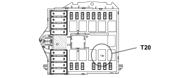

2127ED CHECK ON OPERATION OF SHIFT LOCK LEVER RELEASE SOLENOID
- Path
- Test > 21 GEARBOX UNIT > 2127 ELECTRO-HYDRAULIC SELECTION GEARBOX EXTERNAL CONTROLS > 2127E GEAR CONTROL SELECTION ELECTRIC SYSTEM > 2127ED CHECK ON OPERATION OF SHIFT LOCK LEVER RELEASE SOLENOID
- Kind
- test / check procedure
- Applies to
- engines: 2.2 JTS; all production periods; only with equipment: Smart gearbox
- Interactive page
- https://sloeber94.github.io/elrnDB-aBrrSpdr/en/#/946004567
Applies to: engines: 2.2 JTS; all production periods
STEP | CHECK TO BE PERFORMED | REMEDIAL ACTION IF THE CHECK IS NOT OK |
|---|---|---|
1 | Solenoid control relay check Check that the solenoid control relay is working properly Check the continuity of the 15 A fuse F24 located in the engine compartment junction unit Move on to Step 2 | Replace the relay Replace the fuse after having identified what caused it to blow |
2 | Check the operation of the solenoid wiring Disconnect solenoid control relay T20 Insert the TEG in the TEG Reader Using a cable with a fuse, bridge pin 87 of the connector for relay T20 with pin 30 (as illustrated) and check the operation of the solenoid Move on to Step 3 | Restore the wiring between the engine compartment junction unit and the solenoid on the gear lever Restore the solenoid earth connection. Replace the gear lever Op. 2127A12 HAND LEVER FOR MANUAL GEARBOX WITH HYDRAULIC SELECTION - R.R. |
3 | Check the wiring Check the continuity of the wiring between the gearbox control unit and the engine compartment junction unit Check that the gearbox control unit is receiving the correct power supply Check that the gearbox control unit is correctly earthed Check that the gearbox control unit is working properly | Restore the wiring between the gearbox control unit and the engine compartment junction unit Restore the correct power supply for the junction unit Restore the control unit earth connection Replace the gearbox control unit Op. 2127E10 HYDRAULIC SPEED SELECTION SYSTEM CONTROL UNIT - R.R. |

Topics linked from this page (3)
- 2127A12 HAND LEVER FOR MANUAL GEARBOX WITH HYDRAULIC SELECTION - R.R.
- 2127E10 HYDRAULIC SPEED SELECTION SYSTEM CONTROL UNIT - R.R.
- E7051 ROBOTIZED GEARBOX